컴퓨터활용능력-3급(폐지) (2005-05-15 기출문제)
1과목: 컴퓨터 일반
1. WWW 이용자가 인터넷에 접속할 때 처음 방문하게 되는 홈페이지를 지칭하는 용어로 상업적인 가치가 재평가되어 최근 붐이 일고 있으며 인터넷 접속, 전자우편, 홈페이지, 채팅, 게시판, 게임, 쇼핑 등을 종합적으로 하나의 화면에서 서비스함으로써, 네티즌을 자신의 사이트에 유치하려는 전략을 무엇이라 하는가?
- DNS
- AOD
- 포털 사이트(Portal Site)
- 게이트웨이 사이트(Gateway Site)
(정답률: 81%)

2. 가상사회에서 자신의 분신을 뜻하는 말로, 사이버 게임이나 인터넷 채팅에서 자신을 나타내는 애니메이션 인물을 무엇이라 하는가?
- 블로거
- 아바타
- 렌더링
- 라우터
(정답률: 95%)
3. 컴퓨터의 중앙처리 장치 중 입력된 데이터를 명령에 따라 산술 및 논리연산을 수행하는 장치는?
- CU
- IR
- ALU
- PC
(정답률: 81%)
4. 한글 Windows에서는 많은 작업이 동시에 수행될 수 있다. 이때 열려진 다른 창(작업 프로그램)으로 전환하는 단축키는 어떤 것인가?
- Alt +F4
- Alt+Tab
- Ctrl+ F4
- Ctrl+Tab
(정답률: 91%)
5. 한글 Windows에 관한 다음 설명 중 올바른 것은?
- 왼손잡이를 위해 마우스의 단추를 변경할 수 없게 되어 있다.
- [제어판]-[프린터]에서 인쇄방향 중 양면인쇄는 설정할 수 없게 되어 있다.
- 마우스의 두 번 누르기 속도를 느리게 하거나 빠르게 조절할 수 없게 되어 있다.
- 마우스를 사용할 수 없게 되었을 때 키보드로 마우스를 대용할 수는 없게 되어 있다.
(정답률: 65%)
6. 스팸메일(spam mail)이 널리 유포됨에 따라 사회적인 문제로 대두되고 있다. 스팸메일에 관한 다음 설명 중 바르지 않은 것은?
- 원하지도, 요청하지도 않았는데 어쩔 수 없이 받는 불필요한 메일 전체를 말한다.
- 스팸 메일은 정크 메일(junk mail), 벌크 메일(bulk mail)이라고도 한다.
- 다량의 메일을 발송하여 시스템이나 네트워크를 마비시킬 정도로 심각하기도 하다.
- 스팸 메일은 항상 메일을 확인하고 삭제해야 하는 불편함이 있다.
(정답률: 86%)
7. 다음 중에서 인터넷에 관한 설명으로 틀린 것은 ?
- 인터넷은 초기에 민간 기구에서 주도해서 이루어졌다.
- 전세계 대부분의 통신망들이 서로 연결된 최대의 네트워크이다.
- 인터넷은 TCP/IP 통신 규약을 사용한다.
- 인터넷은 IP 주소체계를 사용한다.
(정답률: 86%)
8. 다음 중 컴퓨터와 주변기기가 데이터를 주고 받을 때 속도의 차이를 보완하기 위해 데이터를 일시적으로 저장하는 장치는?
- 스택(Stack)
- 디스크(Disk)
- 큐(Queue)
- 버퍼(Buffer)
(정답률: 94%)
9. 한국내에서 IP 주소를 할당하고 도메인을 등록 관리하여 주는 기관은?
- InterNIC
- APNIC
- KRNIC
- JPNIC
(정답률: 67%)
10. 다음 중 한글 Windows의 [휴지통] 다루기에 관련된 내용과 거리가 먼 것은?
- 삭제된 파일들을 임시로 보관하는 장소이다.
- 하드디스크에서 [Shift] + [Del] 키를 눌러 파일이나 폴더를 지운 경우는 휴지통에 임시로 저장되지 않는다.
- 휴지통에 있는 파일이나 폴더를 복원할 경우, 모든 파일이나 폴더를 한번에 모두 복원하지 못하다.
- 휴지통에 보관되어 있는 파일중 특정한 파일만 완전히 삭제 할 때는 해당 파일을 선택하고 [파일] [삭제]를 실행하면 완전 삭제된다.
(정답률: 81%)
11. 원격지에 있는 다른 시스템과의 원활한 통신이 가능하도록 상호간에 준수해야하는 규범을 무엇이라고 하는가 ?
- 인터페이스
- 데이타 통신
- 프로그램
- 프로토콜
(정답률: 87%)
12. 한글 Windows 98의 [부팅]과 관련된 바로 가기 키에 대한 설명으로 올바르지 않은 것은?
- F4 : Previous version of MS-DOS 상태로 부팅한다.
- F5 : Safe Mode 상태로 부팅한다.
- F6 : Safe mode with network support 상태로 부팅한다.
- F7 : Command Prompt Only 상태로 부팅한다.
(정답률: 48%)
13. 다음은 한글 Windows의 [탐색기]에 관련된 설명이다. 옳지 않는 것은?
- 탐색폴더의 탐색창을 이용하여 작업위치를 빠르게 이동할 수 있다.
- 왼쪽창의 (-)를 누르면 선택한 폴더의 하위폴더가 나타난다.
- 왼쪽창, 오른쪽창 등의 전환은 기능키([F6])을 이용하여 사용한다.
- 왼쪽창에 있는 폴더를 누르면 오른쪽창에 그 폴더의 내용이 나타난다.
(정답률: 68%)
14. 두 장의 유리판 사이에 네온 또는 아르곤 혼합 가스를 채우고 전압을 가해 가스의 전자가 충돌하면 빛이 발생하도록 하는 원리를 이용하여 화면을 표시하는 장치를 무엇이라 하는가?
- CRT
- LCD
- MIPS
- PDP
(정답률: 75%)
15. 노트북을 사용할 때 모뎀이나 랜 카드 같은 주변장치를 연결하기 위해 사용하는 방식은 무엇인가?
- DMA 방식
- SCSI 방식
- PCMCIA 방식
- BUS 방식
(정답률: 58%)
16. 한글 Windows 98의 [그림판]을 사용하기 위해서는 어떻게 찾아 들어가야 하는지 다음 중 바른 것을 고르시오.
- 시작 → 프로그램설정 → 그림판
- 시작 →프로그램 → 게임 → 그림판
- 시작 → 프로그램 → 보조프로그램 → 그림판
- 시작 → 설정 → 제어판 → 그림판
(정답률: 91%)
17. 다음의 디지털 컴퓨터에 대한 설명으로 가장 맞지 않는 것은?
- 모든 기호나 그림 등의 자료를 2진수로 표현한다.
- 자료 저장의 기본 단위는 bit이며, 저장 용량을 표시할 때 byte 단위를 사용한다.
- 여러 가지 목적에 사용할 수 있는 컴퓨터뿐만 아니라 특정한 목적으로만 사용되는 컴퓨터도 있다.
- 디지털 컴퓨터는 TV수신카드를 설치해야만 부팅하는 단점이 있다.
(정답률: 75%)
18. 컴퓨터와 사람의 정보 처리 기능을 비교해 볼 때, 눈, 코, 귀, 피부의 기능에 해당되는 컴퓨터의 기능은 무엇인가?
- 입력기능
- 기억기능
- 통신기능
- 출력기능
(정답률: 77%)
19. 한글 Windows에서 파일 관리에 대한 다음 설명 중 가장 옳지 않은 것은?
- 같은 폴더 내에 이름이 같은 여러 개의 파일을 만들 수 있다.
- 폴더 내에 여러 개의 하위 폴더를 만들 수 있다.
- 특정 파일을 클릭하면 이에 연결된 프로그램이 실행된다.
- 네트워크를 통해 다른 컴퓨터와의 파일을 공유할 수 있다.
(정답률: 88%)
20. 한글 Windows 98 [탐색기]나 [내 컴퓨터]에서 드라이브 아이콘을 마우스 오른쪽 버튼으로 클릭하여 [등록정보]를 선택할 경우 [등록정보] 창에 대한 설명으로 잘못된 것은?
- [일반] 탭에서 드라이브의 "이름표"를 직접 변경할 수 있다.
- [일반] 탭에서 디스크의 여유 공간을 알아볼 수도 있고, 디스크 정리를 할 수 있다.
- [공유] 탭에서 이 드라이브를 다른 네트워크 사용자를 위해 공유여부를 설정할 수 있다.
- [도구] 탭에서 드라이브를 백업 할 수도 있고, 디스크 조각 모음 및 오류검사뿐만 아니라 디스크 드라이브를 변경할 수도 있다.
(정답률: 59%)
2과목: 스프레드시트 일반
21. 다음과 같이 창을 나누기 위해서는 셀 포인터가 어디에 있어야 하는가?
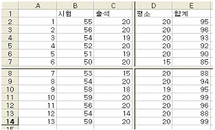
- D8
- C8
- C7
- D7
(정답률: 78%)
22. 다음 시트와 같이 ‘사번'의 왼쪽에서 세번째, 네번째 값이 “EC" 를 포함하는 경우에는 ‘교육대상자'에 “대상자"로 표시하고, 그렇지 않을 경우 공백으로 표시하기 위해 [C2] 셀에 입력할 수식으로 옳은 것은?
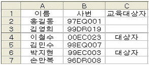
- =IF(MID(B2,3,4)="EC","대상자","")
- =IF(MID(B2,3,4)="EC","대상자")
- =IF(MID(B2,3,2)="EC","대상자","")
- =IF(MID(B2,3,2)="EC","대상자")
(정답률: 51%)
23. 다음은 산술 연산자를 입력하는 방법에 대한 설명이다. 잘못된 것은 어느 것인가?
- A1 셀에 3+3이라는 계산식을 문자열로 표시하고자 할 때는 3+3이라 입력하면 된다.
- A1 셀에 3-3이라는 계산식을 문자열로 표시하고자 할 때는 3-3이라 입력하면 된다.
- A1 셀에 3*3이라는 계산식을 문자열로 표시하고자 할 때는 3*3이라 입력하면 된다.
- A1 셀에 3^3이라는 계산식을 문자열로 표시하고자 할 때는 3^3이라 입력하면 된다.
(정답률: 57%)
24. 다음 중 워크시트에 입력된 데이터를 '나이'가 어린 사람부터 표시하고, '나이'가 같을 경우에는 '점수'가 높은 사람부터 표시하기 위한 정렬 기준으로 올바른 것은?
- 첫째 기준: 나이: 오름차순 : 둘째 기준: 점수: 내림차순
- 첫째 기준: 점수: 내림차순 : 둘째 기준: 나이: 오름차순
- 첫째 기준: 나이: 내림차순 : 둘째 기준: 점수: 오름차순
- 첫째 기준: 점수: 오름차순 : 둘째 기준: 나이: 내림차순
(정답률: 71%)
25. 날짜 데이터 "20⑤-08-20"의 표시 형식을 사용자 정의 서식 코드 "yyyy-m-d"로 설정했을 때 셀에는 표시되는 결과로 옳은 것은?
- 20⑤-08-20
- 20⑤-8-Tuesday
- 20⑤-8-2
- 20⑤-8-20
(정답률: 64%)
26. 다음 차트에서 차트 제목을 삽입하기 위한 방법으로 옳은 것은?
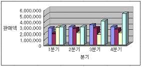
- [원본 데이터]-[축]-[차트 제목] 입력
- [차트 옵션]-[축]-[차트 제목] 입력
- [원본 데이터]-[제목]-[차트 제목] 입력
- [차트 옵션]-[제목]-[차트 제목] 입력
(정답률: 64%)
27. 워크시트의 [A1]셀에 20/01/02 를 입력하였을 때, [A1]셀에 표시되는 결과로 올바른 것은?
- 2020-01-02
- 1920-01-02
- 2000-01-02
- 1920/01/02
(정답률: 75%)
28. 다음 그림은 [찾기] 대화상자이다. 다음 중 이 대화상자가 표시되도록 하기 위해 실행해야 할 메뉴는?
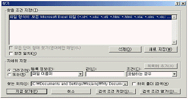
- [파일]-[열기]- [도구]-[찾기]
- [편집]-[찾기]
- [도구]-[목표값 찾기]
- [도구]-[추가기능]-[찾아보기]
(정답률: 71%)
29. 차트를 선택한 후, 오른쪽 마우스를 클릭하면 나타나는 [차트영역 서식]에서 작업할 수 없는 것은?
- 차트의 테두리 설정
- 차트 제목의 글꼴과 크기 변경
- 범례 설정 및 해제
- 차트의 배경 설정
(정답률: 59%)
30. [Shift] 키를 누른 상태에서 sheet1, sheet2, sheet3 시트를 모두 선택하여 그룹화 한 뒤에 첫 번째 sheet1의 [A2]셀에 “그룹화예제"라는 단어를 입력하고 [Enter] 키를 누룬 후 결과는 어떻게 나타나는가?
- 첫 번째 시트의 [A2]셀에만 "그룹화예제" 단어가 입력된다.
- 모든 시트의 [A2]셀에 “그룹화예제" 단어가 입력된다.
- 그룹화 되어 있어 특정 시트의 셀에만 “그룹화예제" 단어를 입력할 수 없다.
- 마지막 시트의 [A2]셀에만 “그룹화예제" 단어가 입력된다.
(정답률: 63%)
31. 다음 그림 중 전체 항목 중에서 각 값의 백분율을 비교할 때 사용하는 차트 종류는?
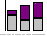
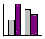
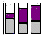
(정답률: 62%)
32. 워크시트에서 특정 영역만 인쇄하려고 한다. 가장 먼저 해야 하는 작업은 무엇인가?
- [파일]-[인쇄 영역 설정]
- 인쇄할 영역 범위지정
- 미리보기
- [파일]-[페이지 설정]
(정답률: 60%)
33. 아래 시트에서 [D1 ]셀의 수식이 =$A$1+C1으로 적혀 있었다. 이를 [D3]셀에 복사했을 때, 그 결과로 옳은 것은?
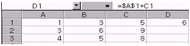
- 12
- 10
- 9
- 17
(정답률: 60%)
34. 다음 항목은 [인쇄미리보기] 화면의 여백표시 선이 표시된 상태에서 마우스로 작업이 가능한 내용이다. 다음 중 틀린 것은?
- 인쇄 여백을 상하좌우로 확대 및 축소할 수 있다.
- 셀(열)의 너비를 좌우로 확대 및 축소할 수 있다.
- 셀(행)의 높이를 위아래로 확대 및 축소할 수 있다.
- 머리글과 바닥글의 높이를 위아래로 조정할 수 있다.
(정답률: 52%)
35. [A2]셀에 다음과 같은 수식을 입력하였다. [A2]셀의 결과 값은?
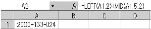
- 19
- 20
- 21
- 22
(정답률: 53%)
36. 다음 중 문서의 왼쪽 머리글로 현재 날짜를 삽입하여 인쇄하기 위해서 명령을 실행한 결과로 [왼쪽 구역(L)]에 입력된 내용으로 옳은 것은?
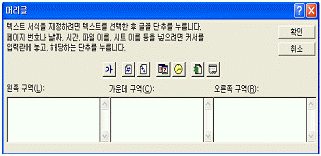
- *[날짜]
- &[날짜]
- *[DATE]
- &[DATE]
(정답률: 65%)
37. 다음 중 [서식] - [스타일]에서 [스타일에 포함할 항목]에 포함되지 않는 것은 어느 것인가?
- 표시 형식
- 테두리(괘선)
- 글꼴
- 행 높이 / 열 넓이
(정답률: 61%)
38. 다음 중 조건부 서식에 대한 설명으로 옳지 않은 것은?
- 조건부 서식에서 조건은 최대 6개까지 지정할 수 있다.
- 수식의 결과는 참이나 거짓의 논리 값이어야 한다.
- 셀 값이 조건과 일치하거나, 수식 결과가 참일 때만 지정한 서식이 적용된다.
- 여러 개의 조건은 AND나 OR로 결합되지 않고 각 조건을 만족하는 서식을 별도로 설정해 주어야 한다.
(정답률: 79%)
39. 아래에 작성된 차트에 설정되어 있는 항목은 ?
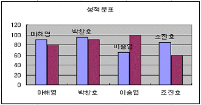
- 범례
- 데이터 레이블
- 데이터 테이블
- X축 제목
(정답률: 70%)
40. [C2]셀에 Rank 함수를 이용하여 아래에 작성된 '점수'에 대한 순위를 정하고 [C5]셀까지 채우려고 한다. [C2]셀에 들어갈 알맞은 식은?
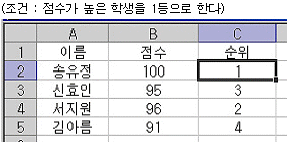
- =RANK(B2, B2:B5)
- =RANK(B2, $B$2:$B$5)
- =RANK($B$2, $B$2:$B$5)
- =RANK(B2, $B2:$B5)
(정답률: 70%)